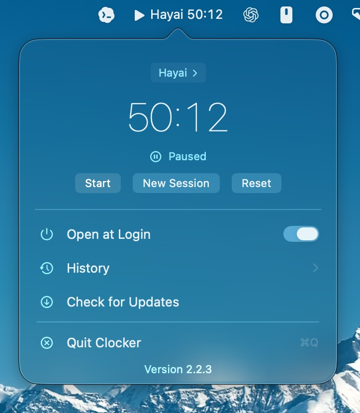
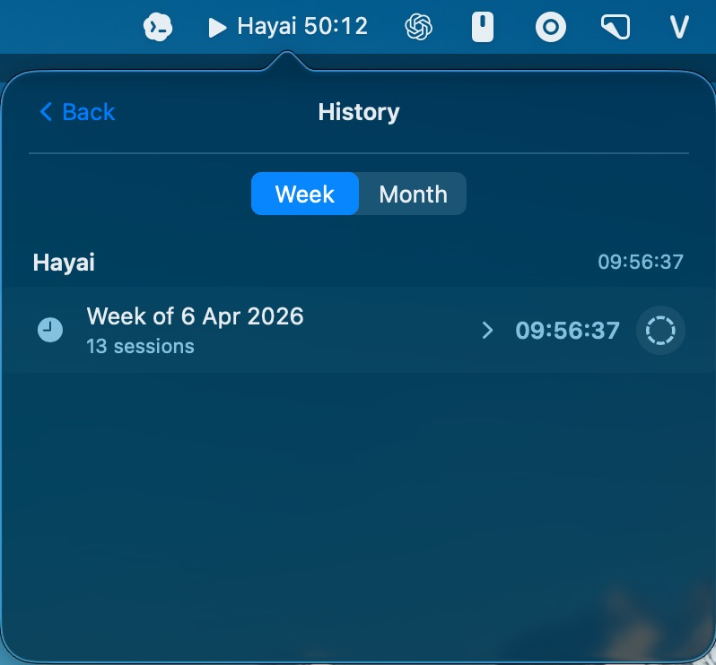

Left-click to start or stop. Right-click or control-click to open the full popover when you need it.
Public GitHub Pages site for Clocker
Track work without leaving the menu bar.
Clocker is a lightweight macOS timer for project-based time tracking. It stays out of the way, restores today’s record on launch, and keeps your logs local and plain text.

Built for fast, quiet tracking.
Everything here is tuned for the app’s actual workflow: start, switch, restore, review, and get out of the way.
Track time per project, start a new session when needed, and browse weekly or monthly history views.
Clocker stores plain-text daily logs on your Mac, with no account, no cloud sync, and no hidden database.
Latest screenshots.
The current release shows a cleaner timer state and a history browser that switches between week and month views.

What Clocker does
It gives you a live stopwatch in the menu bar, restores the current day on launch, and keeps your tracked time visible without turning into a full-screen app.
- Project-specific tracking with quick switching
- Daily restoration from the most recent local record
- Open-at-login support through macOS system APIs
- Automatic updates from GitHub Releases for signed builds
“A menu bar timer that feels like part of macOS, not another dashboard.”
© Clocker. Built for the public GitHub Pages site.